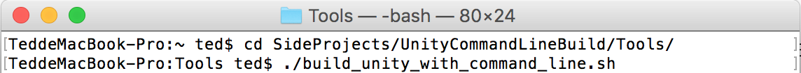

命令行，可見度很高的軟體工具之一，一直以來都存在於電腦作業系統中，在 Mac OS X、Windows 及 Linux 裡都可以找到這個軟體工具。雖然在當今軟體業中使用者介面越來越完善，但是卻絲毫不影響使用命令行的用戶。透過命令行，可以執行並組織出特定的功能，從基本的軟體安裝、版本控制指令到自動化版本建置、自動化專案更新及其他使用者介面所無法達到的功能。
這次就來實作如何透過命令行，執行 Unity 版本建置功能。
文章中所實作的作業系統為 Mac OS X。
終端機位置
Mac OS X
應用程式/實用工具/終端機
Windows
開始/所有程式/附屬應用程式/命令提示字元
Linux
應用程式/附屬應用程式/終端機Unity 執行檔路徑
Mac OS X
/Applications/Unity/Unity.app/Contents/MacOS/Unity
Windows
"C:\Program Files\Unity\Editor\Unity.exe"
Linux
/opt/Unity/Editor/UnityUnity 命令行參數
-batchmode
//在 batch mode 下執行 Unity
//需要注意，Unity 只允許同時間存在一個執行程序
-quit
//在命令行結束執行時，關閉 Unity Editor
//需要注意使用這個功能，會導致無法在 Unity Editor 中查看錯誤訊息
-projectPath <pathname>
//Unity 專案路徑
-logFile <pathname>
//建置日誌路徑
-executeMethod <ClassName.MethodName>
//開啟 Unity 時，執行類別中的靜態方法
//可利用於 CI、Unit Tests、版本建置、資料處理...等。
//要注意類別腳本需要放置在 Editor 資料夾中客製化命令行參數
有時候我們會需要一些客製化功能，來擴充並改善自動化建置的流程，像是版本輸出路徑、Android Keystore 設定、Android Keyalias 設定…等等。
雖然 Unity 所提供的命令行參數並沒有這些功能，但我們可以很方便地進行功能擴充。
這邊就簡單的實作如何客製化輸出路徑。
-destination <pathname>
//輸出路徑解析客製化命令行參數
private static string _destinationPath;
private static void CustomizedCommandLine()
{
Dictionary<string, Action<string>> cmdActions = new Dictionary<string, Action<string>>
{
{
"-destinationPath", delegate(string argument)
{
_destinationPath = argument;
}
}
};
Action<string> actionCache;
string[] cmdArguments = Environment.GetCommandLineArgs();
for (int count = 0; count < cmdArguments.Length; count++)
{
if (cmdActions.ContainsKey(cmdArguments[count]))
{
actionCache = cmdActions[cmdArguments[count]];
actionCache(cmdArguments[count + 1]);
}
}
if (string.IsNullOrEmpty(_destinationPath))
{
_destinationPath = Path.GetDirectoryName(Application.dataPath);
}
}完整 BuildTool
using UnityEditor;
using UnityEngine;
using System;
using System.IO;
using System.Collections.Generic;
public class BuildTool
{
[MenuItem("BuildTool/Build")]
private static void Build()
{
CustomizedCommandLine();
string destinationPath = Path.Combine(_destinationPath, PlayerSettings.productName);
destinationPath += GetExtension();
BuildPipeline.BuildPlayer(EditorBuildSettings.scenes, destinationPath, EditorUserBuildSettings.activeBuildTarget, BuildOptions.None);
}
private static string _destinationPath;
private static void CustomizedCommandLine()
{
Dictionary<string, Action<string>> cmdActions = new Dictionary<string, Action<string>>
{
{
"-destinationPath", delegate(string argument)
{
_destinationPath = argument;
}
}
};
Action<string> actionCache;
string[] cmdArguments = Environment.GetCommandLineArgs();
for (int count = 0; count < cmdArguments.Length; count++)
{
if (cmdActions.ContainsKey(cmdArguments[count]))
{
actionCache = cmdActions[cmdArguments[count]];
actionCache(cmdArguments[count + 1]);
}
}
if (string.IsNullOrEmpty(_destinationPath))
{
_destinationPath = Path.GetDirectoryName(Application.dataPath);
}
}
private static string GetExtension()
{
string extension = "";
switch (EditorUserBuildSettings.activeBuildTarget)
{
case BuildTarget.StandaloneOSXIntel:
case BuildTarget.StandaloneOSXIntel64:
case BuildTarget.StandaloneOSXUniversal:
extension = ".app";
break;
case BuildTarget.StandaloneWindows:
case BuildTarget.StandaloneWindows64:
extension = ".exe";
break;
case BuildTarget.Android:
extension = ".apk";
break;
}
return extension;
}
}Shell Script
build_unity_with_command_line.sh
#!/bin/bash
UNITY_PATH=/Applications/Unity/Unity.app/Contents/MacOS/Unity
PROJECT_PATH=/Users/ted/SideProjects/UnityCommandLineBuild
BUILD_LOG_PATH=${PROJECT_PATH}/build.log
DESTINATION_PATH=/Users/ted/Desktop/
$UNITY_PATH -quit -batchmode -projectPath ${PROJECT_PATH} -executeMethod BuildTool.Build -logFile ${BUILD_LOG_PATH} -destinationPath ${DESTINATION_PATH}執行 Shell Script

Github 連結
UnityCommandLineBuild
參考資料
CommandLineArguments
Using the command line toolset to run unity tests